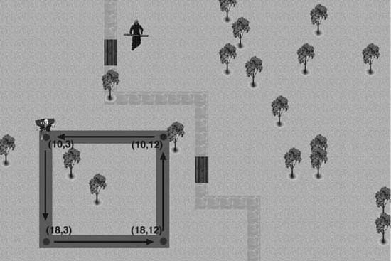
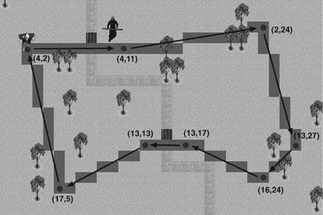
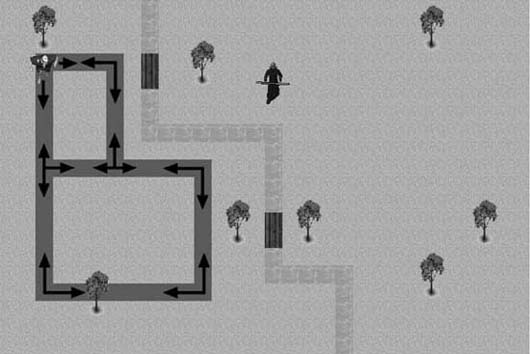

|
|
< Day Day Up > |
|
3.2 Pattern Movement in Tiled EnvironmentsThe approach we're going to use for tile-based pattern movement is similar to the method we used for tile-based line-of-sight chasing in Chapter 2. In the line-of-sight example, we used Bresenham's line algorithm to precalculate a path between a starting point and an ending point. In this chapter, we're going to use Bresenham's line algorithm to calculate various patterns of movement. As we did in Chapter 2, we'll store the row and column positions in a set of arrays. These arrays can then be traversed to move the computer-controlled character, a troll in this example, in various patterns. In this chapter, paths will be more complex than just a starting point and an ending point. Paths will be made up of line segments. Each new segment will begin where the previous one ended. You need to make sure the last segment ends where the first one begins to make the troll moves in a repeating pattern. This method is particularly useful when the troll is in a guarding or patrolling mode. For example, you could have the troll continuously walk around the perimeter of a campsite and then break free of the pattern only if an enemy enters the vicinity. In this case, you could use a simple rectangular pattern. You can accomplish this rectangular pattern movement by simply calculating four line segments. In Chapter 2, the line-of-sight function cleared the contents of the row and column path arrays each time it was executed. In this case, however, each line is only a segment of the overall pattern. Therefore, we don't want to initialize the path arrays each time a segment is calculated, but rather, append each new line path to the previous one. In this example, we're going to initialize the row and column arrays before the pattern is calculated. Example 3-4 shows the function that we used to initialize the row and column path arrays. Example 3-4. Initialize path arrays
void InitializePathArrays(void)
{
int i;
for (i=0;i<kMaxPathLength;i++)
{
pathRow[i] = --1;
pathCol[i] = --1;
}
}
As Example 3-4 shows, we initialize each element of both arrays to a value of -1. We use -1 because it's not a valid coordinate in the tile-based environment. Typically, in most tile-based environments, the upper leftmost coordinate is (0,0). From that point, the row and column coordinates increase to the size of the tile map. Setting unused elements in the path arrays to -1 is a simple way to indicate which elements in the path arrays are not used. This is useful when appending one line segment to the next in the path arrays. Example 3-5 shows the modified Bresenham line-of-sight algorithm that is used to calculate line segments. Example 3-5. Calculate line segment
void ai_Entity::BuildPathSegment(void)
{
int i;
int nextCol=col;
int nextRow=row;
int deltaRow=endRow-row;
int deltaCol=endCol-col;
int stepCol;
int stepRow;
int currentStep;
int fraction;
int i;
for (i=0;i<kMaxPathLength;i++)
if ((pathRow[i]==-1) && (pathCol[i]==1))
{
currentStep=i;
break;
}
if (deltaRow < 0) stepRow=-1; else stepRow=1;
if (deltaCol < 0) stepCol=-1; else stepCol=1;
deltaRow=abs(deltaRow*2);
deltaCol=abs(deltaCol*2);
pathRow[currentStep]=nextRow;
pathCol[currentStep]=nextCol;
currentStep++;
if (currentStep>=kMaxPathLength)
return;
if (deltaCol > deltaRow)
{
fraction = deltaRow * 2 - deltaCol;
while (nextCol != endCol)
{
if (fraction >= 0)
{
nextRow += stepRow;
fraction = fraction - deltaCol;
}
nextCol = nextCol + stepCol;
fraction = fraction + deltaRow;
pathRow[currentStep]=nextRow;
pathCol[currentStep]=nextCol;
currentStep++;
if (currentStep>=kMaxPathLength)
return;
}
}
else
{
fraction = deltaCol * 2 - deltaRow;
while (nextRow != endRow)
{
if (fraction >= 0)
{
nextCol = nextCol + stepCol;
fraction = fraction - deltaRow;
}
nextRow = nextRow + stepRow;
fraction = fraction + deltaCol;
pathRow[currentStep]=nextRow;
pathCol[currentStep]=nextCol;
currentStep++;
if (currentStep>=kMaxPathLength)
return;
}
}
}
For the most part, this algorithm is very similar to the line-of-sight movement algorithm shown in Example 2-7 from Chapter 2. The major difference is that we replaced the section of code that initializes the path arrays with a new section of code. In this case, we want each new line segment to be appended to the previous one, so we don't want to initialize the path arrays each time this function is called. The new section of code determines where to begin appending the line segment. This is where we rely on the fact that we used a value of -1 to initialize the path arrays. All you need to do is simply traverse the arrays and check for the first occurrence of the value -1. This is where the new line segment begins. Using the function in Example 3-6, we're now ready to calculate the first pattern. Here, we're going to use a simple rectangular patrolling pattern. Figure 3-1 shows the desired pattern. Figure 3-1. Rectangular pattern movementAs you can see in Figure 3-1, we highlighted the vertex coordinates of the rectangular pattern, along with the desired direction of movement. Using this information, we can establish the troll's pattern using the BuildPathSegment function from Example 3-5. Example 3-6 shows how the rectangular pattern is initialized. Example 3-6. Rectangular pattern
entityList[1].InitializePathArrays();
entityList[1].BuildPathSegment(10, 3, 18, 3);
entityList[1].BuildPathSegment(18, 3, 18, 12);
entityList[1].BuildPathSegment(18, 12, 10, 12);
entityList[1].BuildPathSegment(10, 12, 10, 3);
entityList[1].NormalizePattern();
entityList[1].patternRowOffset = 5;
entityList[1].patternColOffset = 2;
As you can see in Example 3-6, you first initialize the path arrays by calling the function InitializePathArrays. Then you use the coordinates shown in Figure 3-1 to calculate the four line segments that make up the rectangular pattern. After each line segment is calculated and stored in the path arrays, we make a call to NormalizePattern to adjust the resulting pattern so that it is represented in terms of relative coordinates instead of absolute coordinates. We do this so that the pattern is not tied to any specific starting position in the game world. Once the pattern is built and normalized, we can execute it from anywhere. Example 3-7 shows the NormalizePattern function. Example 3-7. NormalizePattern function
void ai_Entity::NormalizePattern(void)
{
int i;
int rowOrigin=pathRow[0];
int colOrigin=pathCol[0];
for (i=0;i<kMaxPathLength;i++)
if ((pathRow[i]==-1) && (pathCol[i]==-1))
{
pathSize=i-1;
break;
}
for (i=0;i<=pathSize;i++)
{
pathRow[i]=pathRow[i]-rowOrigin;
pathCol[i]=pathCol[i]-colOrigin;
}
}
As you can see, all we do to normalize a pattern is subtract the starting position from all the positions stored in the pattern arrays. This yields a pattern in terms of relative coordinates so that we can execute it from anywhere in the game world. Now that the pattern has been constructed we can traverse the arrays to make the troll walk in the rectangular pattern. You'll notice that the last two coordinates in the final segment are equal to the first two coordinates of the first line segment. This ensures that the troll walks in a repeating pattern. You can construct any number of patterns using the BuildPathSegment function. You simply need to determine the vertex coordinates of the desired pattern and then calculate each line segment. Of course, you can use as few as two line segments or as many line segments as the program resources allow to create a movement pattern. Example 3-8 shows how you can use just two line segments to create a simple back-and-forth patrolling pattern. Example 3-8. Simple patrolling pattern
entityList[1].InitializePathArrays();
entityList[1].BuildPathSegment(10, 3, 18, 3);
entityList[1].BuildPathSegment(18, 3, 10, 3);
entityList[1].NormalizePattern();
entityList[1].patternRowOffset = 5;
entityList[1].patternColOffset = 2;
Using the line segments shown in Example 3-8, the troll simply walks back and forth between coordinates (10,3) and (18,3). This could be useful for such tasks as patrolling near the front gate of a castle or protecting an area near a bridge. The troll could continuously repeat the pattern until an enemy comes within sight. The troll could then switch to a chasing or attacking state. Of course, there is no real limit to how many line segments you can use to generate a movement pattern. You can use large and complex patterns for such tasks as patrolling the perimeter of a castle or continuously marching along a shoreline to guard against invaders. Example 3-9 shows a more complex pattern. This example creates a pattern made up of eight line segments. Example 3-9. Complex patrolling pattern
entityList[1].BuildPathSegment(4, 2, 4, 11);
entityList[1].BuildPathSegment(4, 11, 2, 24);
entityList[1].BuildPathSegment(2, 24, 13, 27);
entityList[1].BuildPathSegment(13, 27, 16, 24);
entityList[1].BuildPathSegment(16, 24, 13, 17);
entityList[1].BuildPathSegment(13, 17, 13, 13);
entityList[1].BuildPathSegment(13, 13, 17, 5);
entityList[1].BuildPathSegment(17, 5, 4, 2);
entityList[1].NormalizePattern();
entityList[1].patternRowOffset = 5;
entityList[1].patternColOffset = 2;
Example 3-9 sets up a complex pattern that takes terrain elements into consideration. The troll starts on the west bank of the river, crosses the north bridge, patrols to the south, crosses the south bridge, and then returns to its starting point to the north. The troll then repeats the pattern. Figure 3-2 shows the pattern, along with the vertex points used to construct it. Figure 3-2. Complex tile pattern movementAs Figure 3-2 shows, this method of pattern movement allows for very long and complex patterns. This can be particularly useful when setting up long patrols around various terrain elements. Although the pattern method used in Figure 3-2 can produce long and complex patterns, these patterns can appear rather repetitive and predictable. The next method we'll look at adds a random factor, while still maintaining a movement pattern. In a tile-based environment, the game world typically is represented by a two-dimensional array. The elements in the array indicate which object is located at each row and column coordinate. For this next pattern movement method, we'll use a second two-dimensional array. This pattern matrix guides the troll along a predefined track. Each element of the pattern array contains either a 0 or a 1. The troll is allowed to move to a row and column coordinate only if the corresponding element in the pattern array contains a 1. The first thing you must do to implement this type of pattern movement is to set up a pattern matrix. As Example 3-10 shows, you start by initializing the pattern matrix to all 0s. Example 3-10. Initialize pattern matrix
for (i=0;i<kMaxRows;i++)
for (j=0;j<kMaxCols;j++)
pattern[i][j]=0;
After the entire pattern matrix is set to 0, you can begin setting the coordinates of the desired movement pattern to 1s. We're going to create a pattern by using another variation of the Bresenham line-of-sight algorithm that we used in Chapter 2. In this case, however, we're not going to save the row and column coordinates in path arrays. We're going to set the pattern matrix to 1 at each row and column coordinate along the line. We can then make multiple calls to the pattern line function to create complex patterns. Example 3-11 shows a way to set up one such pattern. Example 3-11. Pattern Setup
BuildPatternSegment(3, 2, 16, 2);
BuildPatternSegment(16, 2, 16, 11);
BuildPatternSegment(16, 11, 9, 11);
BuildPatternSegment(9, 11, 9, 2);
BuildPatternSegment(9, 6, 3, 6);
BuildPatternSegment(3, 6, 3, 2);
Each call to the BuildPatternSegment function uses the Bresenham line algorithm to draw a new line segment to the pattern matrix. The first two function parameters are the row and column of the starting point, while the last two are the row and column of the ending point. Each point in the line becomes a 1 in the pattern matrix. This pattern is illustrated in Figure 3-3. Figure 3-3. Track pattern movementFigure 3-3 highlights each point where the pattern matrix contains a 1. These are the locations where the troll is allowed to move. You'll notice, however, that at certain points along the track there is more than one valid direction for the troll. We're going to rely on this fact to make the troll move in a less repetitive and predictable fashion. Whenever it's time to update the troll's position, we'll check each of the eight surrounding elements in the pattern array to determine which are valid moves. This is demonstrated in Example 3-12. Example 3-12. Follow pattern matrix
void ai_Entity::FollowPattern(void)
{
int i,j;
int possibleRowPath[8]={0,0,0,0,0,0,0,0};
int possibleColPath[8]={0,0,0,0,0,0,0,0};
int rowOffset[8]={-1,-1,-1, 0, 0, 1, 1, 1};
int colOffset[8]={-1, 0, 1,-1, 1,-1, 0, 1};
j=0;
for (i=0;i<8;i++)
if (pattern[row+rowOffset[i]][col+colOffset[i]]==1)
if (!(((row+rowOffset[i])==previousRow) &&
((col+colOffset[i])==previousCol)))
{
possibleRowPath[j]=row+rowOffset[i];
possibleColPath[j]=col+colOffset[i];
j++;
}
i=Rnd(0,j-1);
previousRow=row;
previousCol=col;
row=possibleRowPath[i];
col=possibleColPath[i];
You start by checking the pattern matrix at each of the eight points around the troll's current position. Whenever you find a value of 1, you save that coordinate to the possibleRowPath and possibleColPath arrays. After each point is checked, you randomly select a new coordinate from the array of valid points found. The end result is that the troll won't always turn in the same direction when it reaches an intersection in the pattern matrix. Note that the purpose of the rowOffset and colOffset variables shown in Example 3-12 is to avoid having to write eight conditional statements. Using a loop and adding these values to the row and column position traverses the eight adjacent tiles. For example, the first two elements, when added to the current row and column, are the tiles to the upper left of the current position. You have to consider one other point when moving the troll. The troll's previous location always will be in the array of valid moves. Selecting that point can lead to an abrupt back-and-forth movement when updating the troll's position. Therefore, you should always track the troll's previous location using the previousRow and previousCol variables. Then you can exclude that position when building the array of valid moves. |
|
|
< Day Day Up > |
|